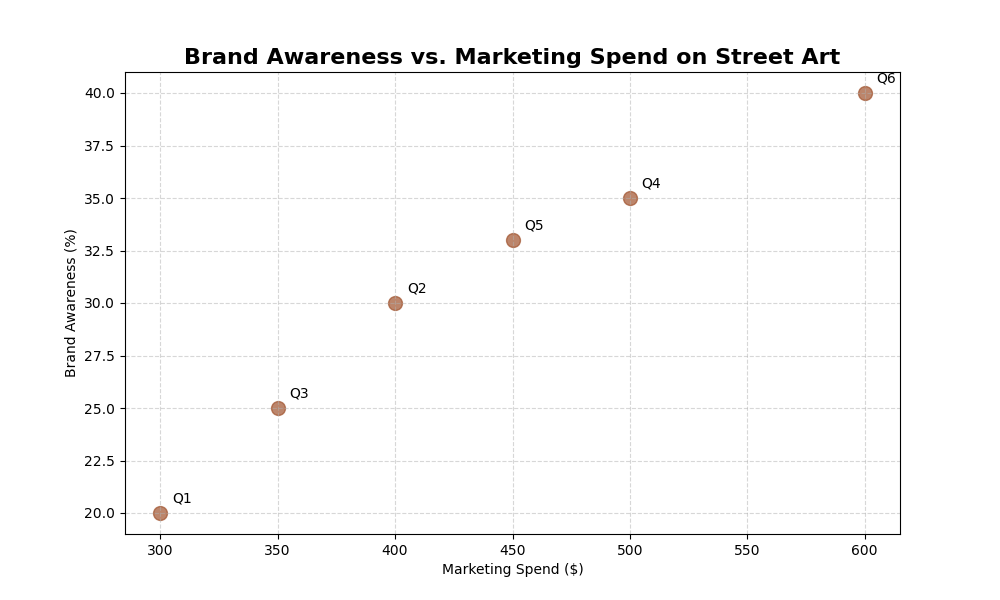
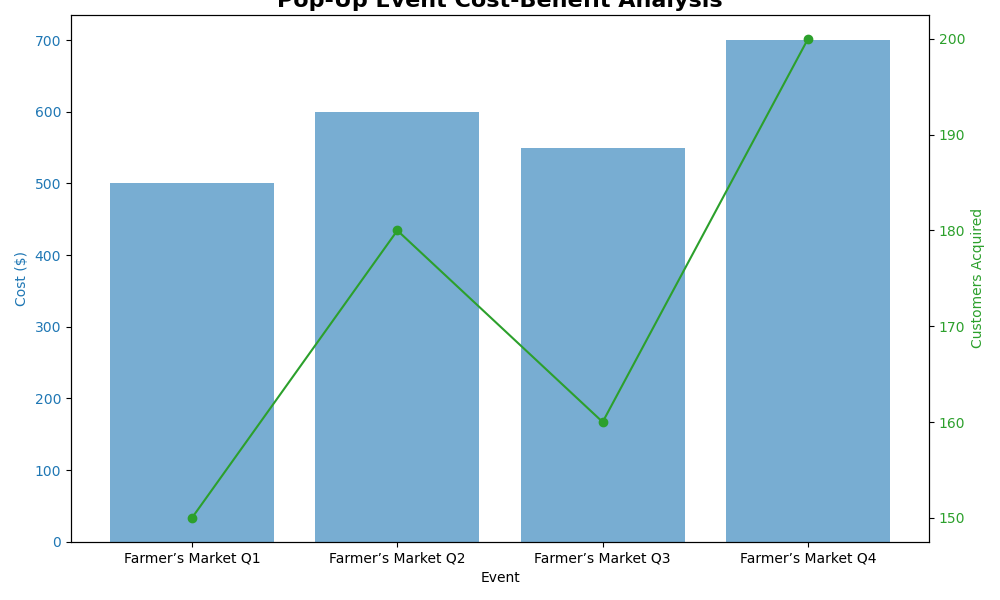
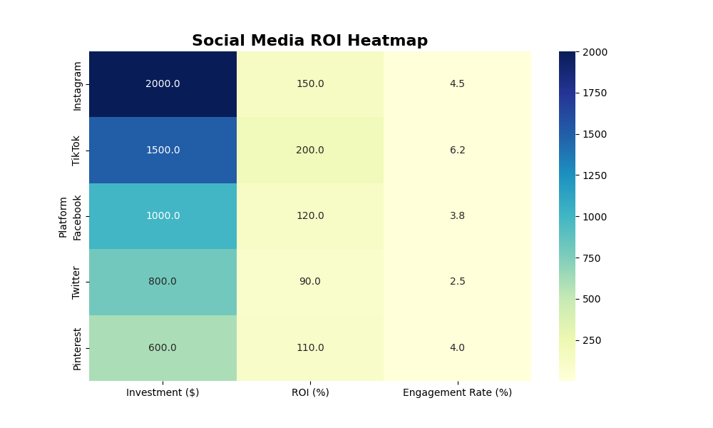
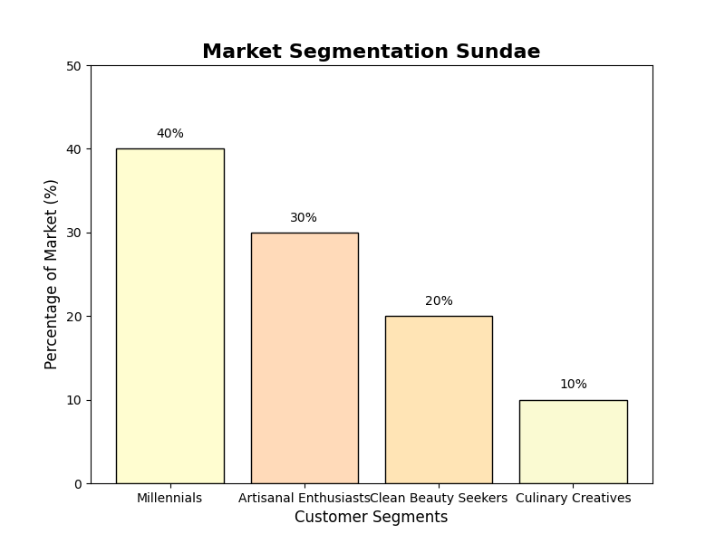
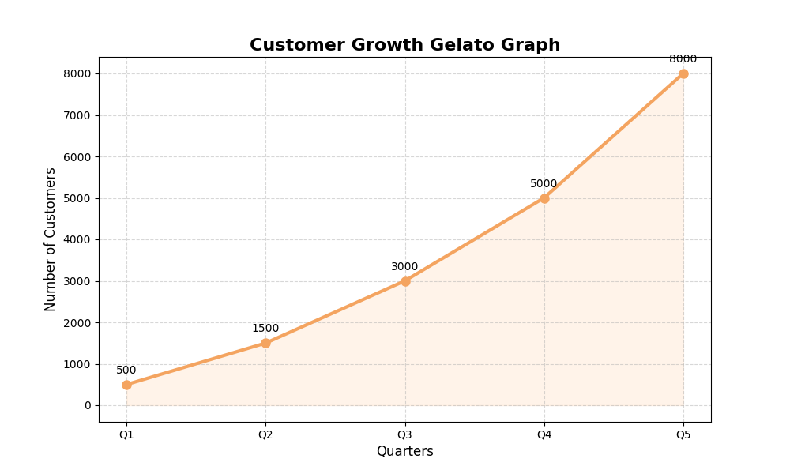
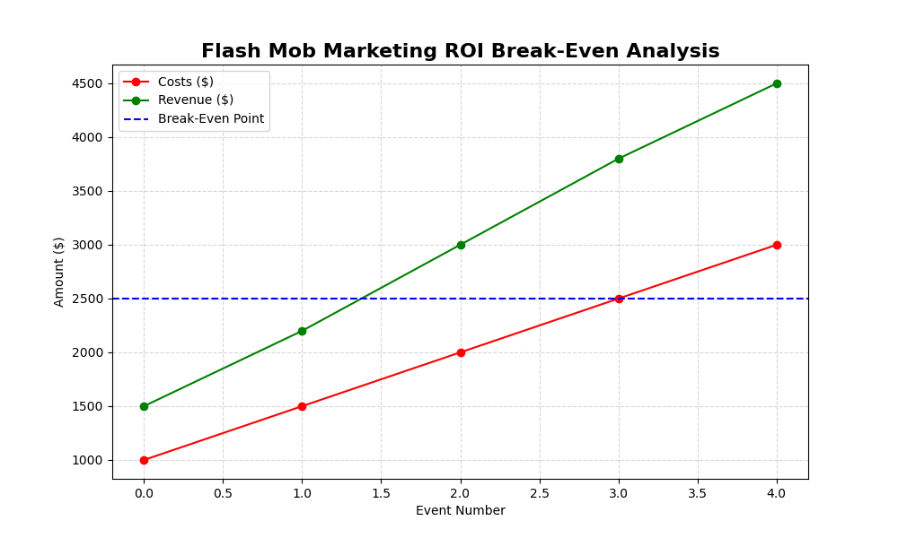
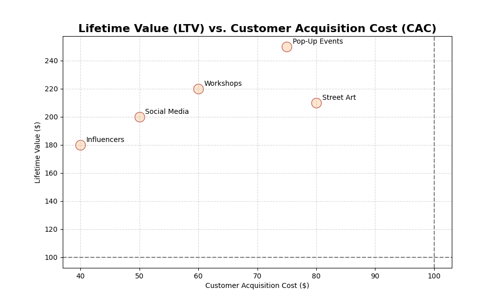

Profitability: The Parfait Pyramid Framework
In a postmodern economic climate characterized by rapidly evolving consumer expectations, the diversification of revenue streams has emerged as a paramount strategic objective. The "Profitability Parfait Pyramid" visualizes a tiered contribution of income sources, with direct sales comprising the apex of fiscal inflow. These insights underscore the necessity of not merely sustaining high-revenue channels but supplementing them with scalable partnerships and customer-centric workshops to solidify long-term growth. Effective profitability management ensures resilience against market volatility and fosters sustainable expansion.
Expanding Trajectories: Revenue and Profit Visualization
Through the lens of compound growth models, our "Revenue Trajectory Analyzer" articulates a near-geometric expansion of revenue over a quinquennial period. Interestingly, profits, though incrementally consistent, reveal the systemic challenge of offsetting costs amidst burgeoning revenue streams—highlighting the crucial balance between scale and efficiency in maturing organizations. This visualization aids stakeholders in forecasting financial milestones and strategizing resource allocation to sustain growth momentum.
Market Segmentation Sundae: Consumer Dichotomies
Market segmentation analysis, as depicted in the Sundae visualization, emphasizes the disproportionate influence of millennials—a generational cohort steeped in the ideals of personalization. However, the potential of emerging niche markets, akin to "Culinary Creatives," presents compelling opportunities for market disruption. Penetrating these lesser-represented silos could yield favorable differentiation and unlock untapped revenue streams. Tailored marketing strategies based on segmentation insights can enhance product relevance and customer loyalty.
Dynamics of Delight: Customer Satisfaction Radar
The "Customer Satisfaction Radar" integrates latent consumer sentiment with tangible product valuation metrics. The concentric dimensions of packaging, texture, and flavor evidence the complexity of achieving product-market fit. Initiatives aligning these attributes holistically ensure multi-level resonance with target audiences. Continuous monitoring of satisfaction drivers enables proactive adjustments to product offerings, fostering enhanced customer experiences and loyalty.
Propelling Forward: Innovation Strategy Matrix
The "Innovation Strategy Matrix" delineates the spectrum of product development initiatives against the backdrop of market demand and technological feasibility. By categorizing projects into incremental, adjacent, and disruptive innovations, organizations can prioritize investments that align with strategic objectives and market trajectories. This framework facilitates balanced innovation portfolios, mitigating risks while capitalizing on high-potential opportunities.
Green Growth: Sustainability Performance Dashboard
Sustainability has transcended from a peripheral concern to a central pillar of modern business strategy. The "Sustainability Performance Dashboard" quantifies environmental, social, and governance (ESG) metrics, providing a holistic view of corporate responsibility endeavors. Embracing sustainable practices not only fosters ethical operations but also enhances brand reputation and meets the growing consumer demand for conscientious businesses.
Brand Resonance: Equity Valuation Graph
Effective brand management is pivotal in cultivating brand equity, which in turn drives customer preference and loyalty. The "Brand Equity Valuation Graph" illustrates the components contributing to brand strength, including awareness, perceived quality, associations, and loyalty. Strategic brand initiatives aimed at enhancing these facets can lead to a robust market presence and sustainable competitive advantage.
Retention Rates: The Loyalty Leverage Chart
Customer retention is a critical metric that underscores the efficacy of a company's value proposition and relationship management. The "Loyalty Leverage Chart" maps retention rates against customer lifetime value (CLV), revealing insights into the profitability of long-term relationships. Implementing targeted retention strategies, such as personalized engagement and loyalty programs, can significantly enhance overall business performance.
Pricing Strategies: The Dynamic Equilibrium Model
Dynamic pricing models empower businesses to adjust prices in real-time based on market demand, competition, and customer behavior. The "Dynamic Equilibrium Model" visualizes price elasticity and its impact on sales volume and revenue. Leveraging data-driven pricing strategies enables companies to optimize profitability while maintaining competitiveness in fluctuating markets.
Competitive Landscape: The Rivalry Radar
Understanding the competitive landscape is essential for strategic positioning and differentiation. The "Rivalry Radar" maps key competitors based on market share, product diversity, and innovation capabilities. This analysis provides actionable insights into competitive threats and opportunities, guiding strategic decisions to enhance market positioning and mitigate risks associated with competitive pressures.
Trend Forecasting: The Future Trajectory Chart
Anticipating market trends is vital for proactive strategy formulation and capitalizing on emerging opportunities. The "Future Trajectory Chart" leverages historical data and predictive analytics to forecast market dynamics over the next decade. By aligning business strategies with anticipated trends, organizations can ensure relevance and maintain a competitive edge in evolving markets.
Financial Fortitude: The Health Metrics Dashboard
Financial health is a cornerstone of organizational sustainability and growth. The "Health Metrics Dashboard" aggregates key financial indicators such as liquidity ratios, profitability margins, and debt levels. Monitoring these metrics provides a comprehensive view of the company's financial stability, informing strategic decisions related to investments, cost management, and resource allocation.
Illuminating Engagement: Social Buzz Butterfly Heatmap
Leveraging the principles of social contagion theory, the Social Buzz Butterfly Heatmap exemplifies the asymmetric distribution of engagement across platforms. While Instagram achieves significant visual engagement, Facebook retains dominance in cross-user interaction density. The data suggests that platform-specific targeting not only amplifies ROI but also maximizes sustained consumer-brand affiliation. Strategic allocation of marketing resources based on platform performance can lead to optimized engagement and enhanced brand presence.